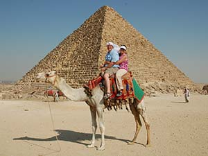

North Travels
"Once you have visited the Holy Lands you will never hear a sermon, sing a song, listen to a Bible class lesson or read the scriptures in the same way."



You can have a great life experience visiting the Holy Lands. You can walk up steps that Jesus walked on, you can walk on the roads that Paul walked on, and you can see sites that Moses saw. It will be an experience you will never forget. We are talking these trips this year:
- See Israel - April 15-23 - make a 9 day trip to Israel
- See Holy Lands - June 1-22 - make a 21 day trip to Israel, Jordan, Egypt, Greece and Turkey.
- See Museums - September 1-14 - make a 14 day tour of 5 great museums in London, Paris, Athens, Cairo and Jerusalem.